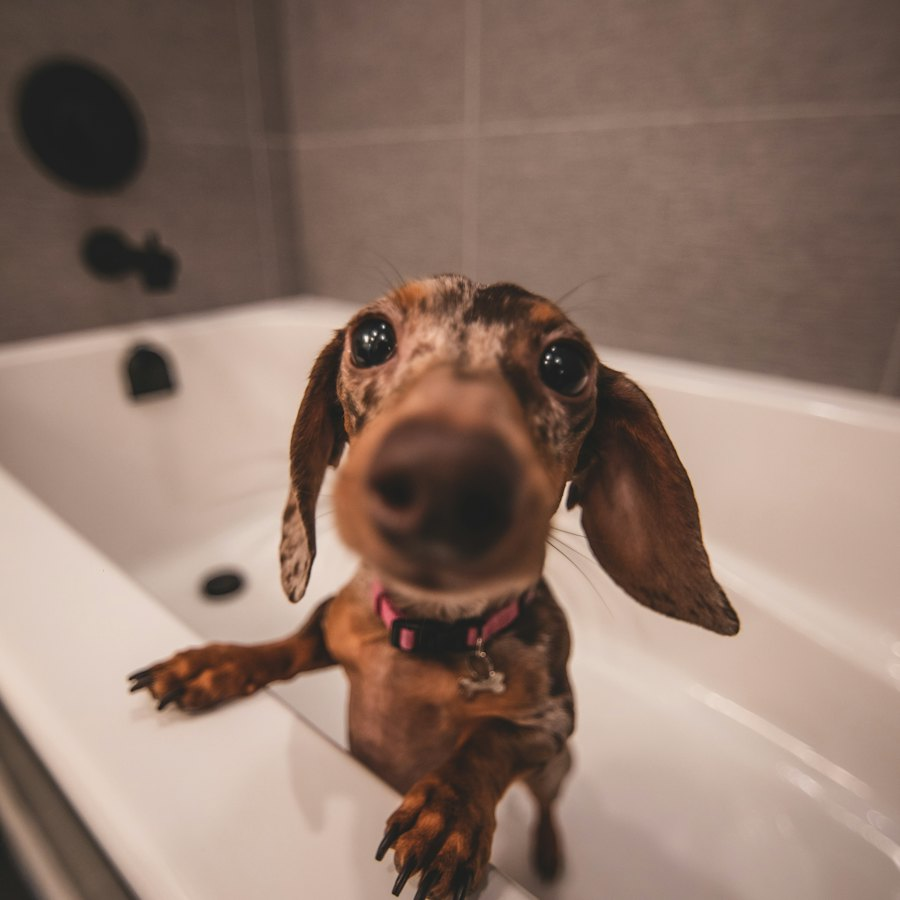
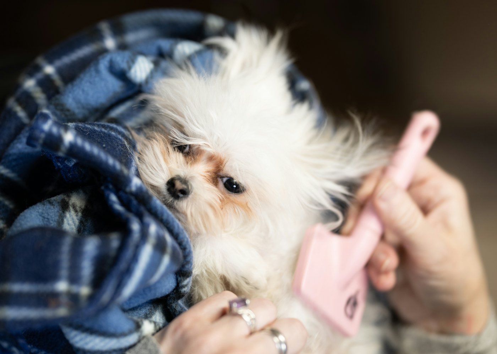

Banho e tosa, sem pressa
Cada pet tem seu jeito, seu pelo e seu medinho. A gente respeita o tempo dele para ele sair cheiroso, bonito e tranquilo.
- BanhoShampoo para o tipo de pelo, secagem e escovação até ficar fofinho.
- TosaHigiênica, na máquina ou na tesoura, do jeito que combina com o seu pet.
- CuidadosUnhas, ouvidos e aquele perfuminho no final.
Texto de exemplo. No site final entram os serviços e os detalhes do Meu Xodó.


Onde o seu xodó precisa de carinho?
Gire o cachorrinho e toque nele para escolher os cuidados. Cada cuidado aparece no xodó, e o pedido vai pronto para o WhatsApp do Meu Xodó.

Chamando o xodó…
Arraste para girar e toque no cachorrinho, ou escolha Escolha os cuidados por aqui:

dos tutores que avaliaram o Meu Xodó no Facebook recomendam.
- 15avaliações no Facebook
- 1.470curtidas na página, mais ou menos
- CNPJempresa com cadastro ativo
No site final entram os comentários dos tutores.
Como funciona
Chama no zap
Conta o nome, o porte e o que o seu pet precisa.
Combina o horário
A gente confirma o dia, a hora e o valor.
Traz o xodó
Ele fica com a gente o tempo do banho e da tosa.
Busca cheiroso
E manda aquela foto pra família, claro.
Texto de exemplo. No site final entra o jeito de trabalhar do Meu Xodó.
Xodós de banho tomado




Fotos ilustrativas. No site final entram os pets atendidos no Meu Xodó.
Horário e endereço
- Segunda8h às 18h
- Terça8h às 18h
- Quarta8h às 18h
- Quinta8h às 18h
- Sexta8h às 18h
- SábadoConsulte pelo WhatsApp
- DomingoConsulte pelo WhatsApp
- Endereço
- R. Floriano Carraro, 32
Vila Rezende, Piracicaba – SP, 13405-156 - (19) 99888-4433